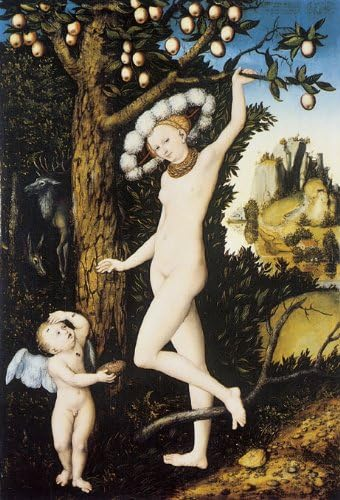

Renacimiento del Norte de Europa · c. 1525
Nicolás Espinosa Restrepo

«Mientras el niño roba un panal de una colmena hueca, una abeja lo pica en el dedo. Así el dios del amor aprende que el placer viene siempre acompañado del dolor.»
— Teócrito, Idylls (fuente literaria de la obra)
Selecciona un color para descubrir su sonido y un dato curioso de la obra
Cada tono habla de la maestría técnica de Cranach
Cargando audio...
El universo pictórico del Renacimiento Septentrional
Lucas Cranach el Viejo fue uno de los pintores más prolíficos e influyentes del Renacimiento alemán. Nacido en Kronach (Baviera) en 1472, desarrolló su carrera principalmente en la corte del elector Federico III el Sabio de Sajonia, en Wittenberg, donde ejerció como pintor oficial durante décadas.
A diferencia del Renacimiento italiano —dominado por la monumentalidad clásica—, el arte del norte de Europa conservó una intensidad emocional y detallismo meticuloso heredados del gótico tardío, combinados con la nueva sensibilidad humanista.
Cranach fue amigo íntimo de Martín Lutero y un ferviente defensor de la Reforma Protestante. Este vínculo marcó profundamente su producción, aunque siguió pintando temas mitológicos con sensualidad refinada.
La pintura ilustra el idilio XIX de Teócrito, poeta griego del siglo III a.C.: Cupido intenta robar miel de una colmena y es atacado por las abejas. Corre a quejarse a su madre Venus, quien le responde con ironía que sus propias flechas también son pequeñas y causan un dolor desproporcionado.
Esta alegoría —"el amor es como la miel: dulce pero doloroso"— era un tema recurrente en la poesía anacreóntica y fue adoptado con entusiasmo por los humanistas del norte europeo como emblema moral.
El paisaje boscoso típicamente germánico que enmarca la escena es un sello distintivo de Cranach: una naturaleza densa y misteriosa muy distinta a los fondos arquitectónicos italianos.
Cranach pintó esta composición en varias versiones entre 1525 y 1545. La tabla del National Gallery es considerada la más refinada. El uso del óleo sobre tabla de haya permitía una precisión casi miniaturista en los detalles: la textura de la piel, las hojas del bosque, el velo transparente de Venus.
La figura de Venus —esbelta, pálida, con un sombrero de ala ancha— responde al ideal de belleza nórdico de Cranach: alejado de la rotundidad clásica mediterránea, más etéreo y ligeramente artificioso.
La capacidad de Cranach para unir moralidad humanista con sensualidad pictórica fue decisiva para el arte protestante alemán. Demostró que era posible pintar desnudos mitológicos sin contradecir los valores reformistas, al cargarlos de alegoría moral explícita.
La obra forma parte de las colecciones permanentes del National Gallery de Londres desde 1963 y es considerada uno de los mejores ejemplos del Renacimiento del Norte en colecciones británicas. Su conservación es excepcional, preservando la vivacidad original de los pigmentos.
De Cranach al presente